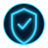

วิเคราะห์ความต้องการ
เก็บ requirement, ตรวจระบบเดิม และกำหนดเป้าหมายของโครงการให้ชัดเจน
Solutions
โซลูชันที่ออกแบบให้เหมาะกับระบบจริงขององค์กร เพื่อช่วยให้การทำงานเสถียร ปลอดภัย และต่อยอดได้ในระยะยาว
Solution Journey
เก็บ requirement, ตรวจระบบเดิม และกำหนดเป้าหมายของโครงการให้ชัดเจน
เลือกเทคโนโลยี วาง topology และติดตั้งตามมาตรฐานที่ตรวจสอบได้
ทดสอบการใช้งานจริง ส่งมอบเอกสาร และเตรียมแนวทาง support หลังใช้งาน
Our Approach
วางโครงสร้างเครือข่ายตั้งแต่ Core, Distribution และ Access Layer ให้รองรับการใช้งานจริง พร้อมคำนึงถึงความเสถียร ความปลอดภัย และการขยายระบบในอนาคต
ยกระดับการป้องกัน ตรวจจับ วิเคราะห์ และตอบสนองเหตุการณ์ด้านความปลอดภัยด้วยแนวทางที่เหมาะกับองค์กร และช่วยลดความเสี่ยงจากภัยคุกคามยุคใหม่
ออกแบบระบบสำรองข้อมูล Cloud และ Disaster Recovery เพื่อให้ธุรกิจทำงานต่อเนื่อง ลดผลกระทบเมื่อเกิดเหตุฉุกเฉินหรือระบบหลักไม่พร้อมใช้งาน
Why choose us?
ทีมงานของเราวิเคราะห์ความต้องการ ออกแบบระบบ เลือกเทคโนโลยี และวางแผนการดูแลหลังส่งมอบ เพื่อให้ลูกค้าได้ระบบที่ใช้งานได้จริงและคุ้มค่ากับการลงทุน
ครอบคลุมโครงสร้างพื้นฐาน งานระบบ เครือข่าย ความปลอดภัย และ Cloud ภายในที่เดียว
ทีมงานวิเคราะห์โจทย์องค์กรและออกแบบ solution ให้เหมาะกับระบบที่ใช้งานจริง

วางแนวคิดด้านความปลอดภัยตั้งแต่โครงสร้างหลักจนถึงปลายทางผู้ใช้งาน
พร้อมช่วยดูแล ตรวจสอบ และให้คำปรึกษาเมื่อองค์กรต้องการความต่อเนื่องในการทำงาน